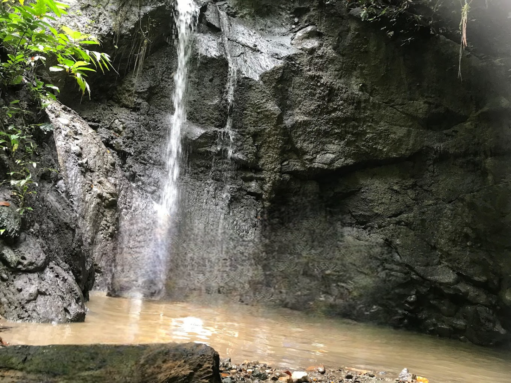

Wisata Kecamatan
Kecamatan Bambaira memiliki potensi wisata yang luar biasa, mulai dari keindahan alam hingga kekayaan budaya yang unik. Ada beberapa destinasi wisata unggulan yang dapat Anda temukan di kecamatan ini, mari kita jelajahi keindahan Kecamatan Bambaira melalui halaman ini.
Wisata Alam Air Terjun
Sambutlah keajaiban alam yang tersembunyi di Desa Kaluku Nangka, Kecamatan Bambaira, Kabupaten Pasangkayu, Provinsi Sulawesi Barat. Di sini, keindahan air terjun Kaluku Nangka menantang Anda untuk menjelajahi alam dan menikmati pesonanya yang memukau. Perjalanan menuju lokasi ini memerlukan sedikit usaha; Anda membutuhkan kendaraan pribadi untuk melalui jalan yang tidak terlalu besar, lalu melanjutkan dengan berjalan kaki selama 45 menit setelah memarkir kendaraan.
Trekking menuju air terjun menantang dengan medan berbatu dan hutan yang masih lebat. Namun, semua rasa lelah akan terbayar lunas ketika tiba di air terjun Kaluku Nangka. Suasana di sekitar air terjun tetap alami, segar, dan dedaunan yang rimbun memberikan keteduhan yang sempurna di bawah sinar matahari, mengubah panas menjadi sejuk. Air terjun ini menjadi tempat penyegaran, di mana rasa lelah seketika hilang saat berendam di bawah pancuran air yang jernih.
Penduduk setempat percaya bahwa air terjun Kaluku Nangka tidak hanya menawarkan keindahan, tetapi juga dapat menjadi pengobatan alternatif melalui pijat refleksi alami. Pilihlah waktu terbaik untuk berkunjung, ketika debit air mencukupi untuk menambah sensasi sejuk dan kesegaran dari air terjun. Pastikan untuk merencanakan kunjungan Anda dengan baik, karena debit air dapat berubah tergantung pada curah hujan.
Destinasi air terjun yang jarang dijamah ini menawarkan pengalaman wisata yang unik di Desa Kaluku Nangka. Temukan keindahan tersembunyi ini dan nikmati momen istimewa di bawah pancuran air terjun yang menakjubkan.


Wisata Alam Sungai Bambatunu
Selamat datang di keindahan alam Kecamatan Bambaira, Sulawesi Barat! Temukan pesona tersembunyi di Wisata Alam Sungai Bambatunu, yang berlokasi di Desa Kaluku Nangka, Kabupaten Pasangkayu. Terletak sekitar 20 km dari pusat kabupaten, Anda bisa menikmati perjalanan sekitar 50 menit dengan sepeda motor menuju ke destinasi menakjubkan ini.
Pemerintah Desa Kaluku Nangka sedang menyiapkan kejutan ekstrem untuk para pengunjung. Bersiaplah untuk merasakan sensasi luar biasa dengan dibukanya jalur arung jeram dan flying fox di kawasan Sungai Bambatunu. Aktivitas seru ini tidak hanya menawarkan keindahan alam yang memikat, tetapi juga petualangan yang memacu adrenalin.
Rasakan pengalaman arung jeram yang mendebarkan di sepanjang sungai atau nikmati kebebasan meluncur di udara dengan flying fox. Inilah kesempatan untuk mencoba petualangan yang belum pernah Anda rasakan sebelumnya.
Selain memberikan pengalaman tak terlupakan, kehadiran arung jeram dan flying fox di Sungai Bambatunu juga bertujuan untuk menghidupkan perekonomian Desa Kaluku Nangka. Dengan dukungan Anda, kami berharap destinasi ini dapat berkembang dan memberikan dampak positif bagi pertumbuhan ekonomi lokal.


Wisata Alam Air Terjun Matapangi
Air Terjun Matapangi di Desa Tampaure, Kecamatan Bambaira, Kabupaten Pasangkayu, Provinsi Sulawesi Barat, memikat dengan keindahan alamnya yang masih alami. Terletak di pegunungan, air terjun ini menawarkan pemandangan spektakuler, meskipun aksesnya menuntut petualangan ekstra untuk mencapainya. Air Terjun Matapangi dikenal memiliki banyak titik air terjun yang berbeda, masing-masing dengan keunikan dan kecantikannya sendiri. Beberapa titik air terjun memiliki ketinggian yang beragam, menciptakan tampilan menakjubkan saat air jatuh dari ketinggian ke dalam kolam alami di bawahnya.
Vegetasi lebat di sekitar air terjun menambah suasana alami yang menyejukkan dan semakin memperindah pesona alamnya. Meskipun aksesnya sulit, keindahan alam yang ditawarkan oleh Air Terjun Matapangi menjadikannya tujuan wisata yang menarik bagi para petualang dan pecinta alam yang ingin menjelajahi keindahan yang masih asli dan belum tersentuh.
Temukan keajaiban Air Terjun Matapangi dan nikmati momen istimewa di tengah keindahan alam Kecamatan Bambaira.
Wisata Alam Langi' Bajo
Langi' Bajo dinamakan demikian karena kawasan wisata ini dihiasi dengan pepohonan Malapari, yang oleh penduduk lokal disebut Langi’ Bajo. Pohon Langi’ Bajo atau Malapari (Pongamia Pinnata L) berasal dari India dan Asia Tenggara, dan telah menyebar ke daerah-daerah tropis di berbagai belahan dunia seperti Australia, Amerika, Selandia Baru, dan Cina. Pohon Langi’ Bajo biasanya tumbuh di area pesisir pantai karena sifatnya yang tahan terhadap salinitas, penggenangan, dan udara terbuka.
Keberadaan pohon Langi' Bajo di kawasan wisata ini menambah keindahan dan kenyamanan bagi para pengunjung yang datang untuk berwisata dan bersantai. Pantai Langi’ Bajo menawarkan pemandangan laut yang memukau, keindahan matahari terbenam, dan penangkaran penyu di bibir pantai yang menjadi daya tarik khas.
Pada malam hari, Langi’ Bajo adalah tempat yang ideal untuk bersantai, menenangkan pikiran, atau relaksasi. Suasana pantai yang tenang dengan suara ombak yang menenangkan membuatnya cocok bagi pelajar atau komunitas pecinta alam yang mencari "healing" atau sekadar menikmati bersepeda santai di sepanjang bibir pantai.
Nikmati keindahan Pantai Langi’ Bajo dan rasakan momen istimewa di kawasan wisata Kecamatan Bambaira ini.


Wisata Alam Goa Ape
Di Kecamatan Bambaira, terdapat sebuah goa yang cukup terkenal, yaitu Goa Ape. Goa Ape terletak di desa Bambaira, berjarak 3,5 Km dari kecamatan Bambaira dan 45 Km dari ibu kota Mamuju Utara. Goa Ape menjadi salah satu yang paling banyak dikunjungi wisatawan lokal karena akses jalannya yang mudah, hanya berjarak 1,5 Km dari jalan Trans Sulawesi.
Goa Ape dikenal dengan keindahan stalaktit dan stalagmitnya yang unik serta suasana alami yang masih asri. Goa ini sering dikunjungi oleh wisatawan lokal maupun dari luar daerah yang ingin menikmati keindahan alam dan petualangan di dalam goa. Selain itu, kawasan sekitar goa juga menawarkan pemandangan alam yang menakjubkan, seperti hutan tropis dan sungai yang mengalir jernih. Untuk mencapai tempat ini sangatlah mudah, karena kondisi jalan sudah bagus dan dapat dilalui oleh semua kendaraan.